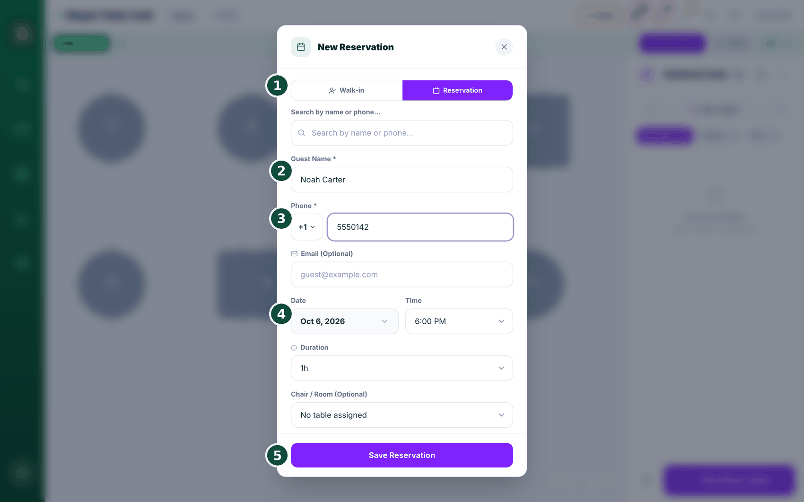
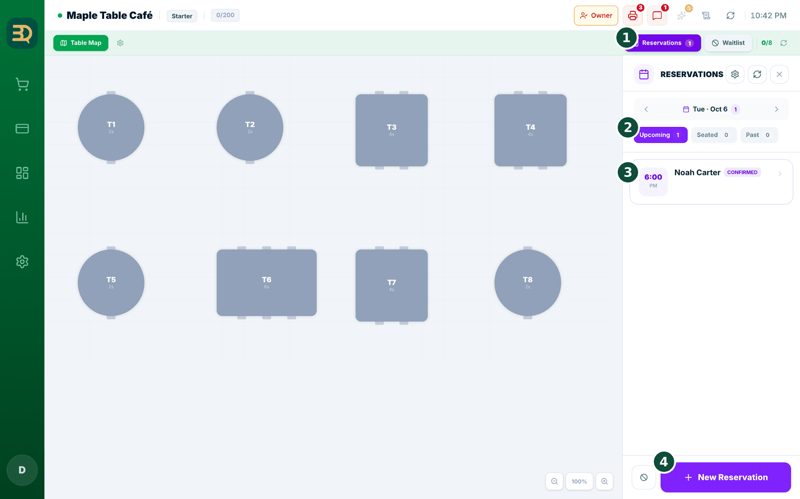

16预订与排程
预订是指顾客在到店之前先订好桌位或时间。您可以把所有预订集中在一个地方管理。我们来添加一个预订吧。
在哪里开启
在 Settings › Add-ons › Reservations 中开启预订（打开开关）。需要先开启桌台（Tables）——如果桌台未开启，会弹出“Enable Both”（同时启用）提示，点一下即可。美容美发、水疗类预订（按员工和时间）使用同一位置的排程（Scheduler）附加功能，它是 Pro 附加功能。
开始之前：请先在 Settings › Hours & Closures 中设置营业时间。预订只会提供营业时段内的时间——所以如果看不到某个时间，请先检查营业时间。


- 打开预订页面。在桌台图（Table Map）中点右上角的 Reservations（预订）——或者打开顶部的排程（Scheduler）标签页。（只有 Pro 套餐并开启了排程附加功能时，才会显示排程标签页。）
- 在日历上点选您要的日期。
- 点 New Reservation（新预订），会打开一个表单。

- 填写 Guest Name（客人姓名）、Phone（电话，两项必填）、Date（日期）和 Time（时间）。Email 可选，Duration（时长）默认为 1 小时。在餐厅、咖啡馆等有桌台的店里，您还需要选择客人数（Guests，1–4 人，或直接输入 5 人及以上）。美容美发、水疗类店铺没有客人数框。
- 可选：选择桌号（Table，美容美发和水疗店为 Chair / Room）和员工（Staff），并添加备注（Note）。对于美容美发或水疗店，选择员工是最重要的一步。只有添加了至少一位员工后，才会出现员工框。
- 点保存（Save）。客人会自动收到一条“预订成功”的确认——通过邮件、短信或 WhatsApp，取决于您的设置。

- 已预订的客人到店后，打开他们的预订卡片并点 Check In（到店签到）。状态会变为 Seated（已入座）（如有需要，还会为他们安排桌台）。
- 有人没预订就直接上门？点 Walk-in 选项——客人会立即入座。
已入座的预订会自动结束。预订一旦变为 Seated（已入座），当该桌结账付款、订单被取消或您日结时，它会自动转入过往预订。再也不会有昨天的客人留在您的预订列表里了。
没来的客人——打烊时一次标记完。打开 Auto No-Show on Close（结账时自动标记未到店），它位于
Settings › Reservations › Settings 中的 Booking Policy & Guest Portal 下。之后，正如说明所述：“启用后，结账时会自动将当天仍为「已确认」状态的预订标记为「未到店」，并向每位顾客发送说明原因的通知邮件。”该功能默认关闭，需要您手动打开。只有仍处于已确认状态的预订才会被处理——已入座、已完成和已取消的预订保持原样；同一天重复日结也不会给任何人重复发邮件。发给客人的邮件语气平和，不带责备：主题是 “We couldn't confirm your visit”，内容说明桌位已为他们保留，但未能确认他们到店，并邀请客人在情况有误时联系您。
排程与预订的区别：排程（Pro，排程附加功能）用于美容美发/水疗的预约（按员工和时间预订）。桌位预订用于堂食（一组客人占一张桌）。它们共用同一个日历区域，所以您的所有预订都在一个地方。
排程的员工列：排程中的按员工分列，只在 Pro 套餐且您有员工账户时才会出现。这与员工附加功能的开关是分开的（请参阅员工与权限）。如果还没有员工，会显示一条提示信息。Starter 套餐没有排程标签页。
没有网络？签到照样可用。网络中断时，您仍然可以点 Check In、No Show（未到店）或 Cancel（取消）——改动会立刻显示在屏幕上，联网后自动上传。只有新建或修改预订会被禁止，屏幕会告诉您原因：“离线状态下无法创建新预订 — 预订日历同时也由店外写入，可能造成重复预订。请在恢复连接后重试。”如果列表完全无法加载，您会看到 “Showing the last list received”（显示最后一次获取的列表），已有的预订仍会保留在屏幕上。
值得展示
预订功能内置。您不需要再装一个应用，也不用额外付费。餐厅可以订桌位；美容美发店和水疗店可以订员工的时间——全都在同一个日历上。
排队候位
候位名单就是等空桌的顾客队伍。BrewDesk 帮您管理这支队伍，并在桌位准备好时第一时间给顾客发短信——他们就不必挤在您的门口了。
在哪里开启
在 Settings › Add-ons › Waitlist 中开启（打开开关）。需要先开启桌台（Tables）——如果弹出提示，请点 Enable Both（同时启用）。

- 打开候位名单（Waitlist）。在桌台图中点右上角的 Waitlist。
- 点 Add Guest（添加顾客），会打开一个小表单。
- 填写顾客的姓名（Name）、人数（Party size，几位用餐）和电话（Phone，方便发短信通知）。您也可以添加备注，然后保存。
- 有桌位空出来时，找到该顾客并点 Notify（通知）。他们会收到一条“您的桌位已准备好”的短信（短信或 WhatsApp）。
- 然后安排他们入座——就完成了。
为什么要填电话？顾客正是通过电话收到“桌位已准备好”的短信。没有电话的话，您就只能用老办法喊名字了。
没有网络，队伍照样前进。添加顾客、入座、No Show（未到店）和 Cancel（取消）在离线时都能用。您会看到 “Saved on this device”（已保存到本机），联网后会自动上传——离线添加的顾客要上传之后才会拿到排队号。刷新屏幕也不会丢掉队伍：它保存在设备上，您会看到 “Showing the last list received”（显示最后一次获取的列表）。唯一需要联网的是 Notify——“桌位已准备好”的短信要等恢复网络后才能发出，所以现在请直接喊这位顾客的名字。
没有桌台？叫号后直接开始点单。如果您的店是柜台模式（没有桌台图），顾客卡片上的按钮会显示 Start Order（开始点单），而不是 Seat（入座）。点击后，BrewDesk 会把他们标记为已入座，并直接带您进入该顾客的点单页面。如果购物篮里已有商品，系统会先询问——Order in progress（有正在进行的订单）→ 点 Hold & start（挂单并开始），旧的购物篮会被放进您的挂单中，不会丢失。
您的取号机显示您的店名。在设为候位名单自助机（Waitlist Kiosk）的平板上，屏幕顶部现在会显示您的店铺 Logo 和店名——它使用您已在
Settings › Store info 中保存的图片，无需另外上传。电话框也会默认显示您所在国家的区号（+1、+82、+66 …），根据您店铺所在国家自动带出，顾客只需输入号码。